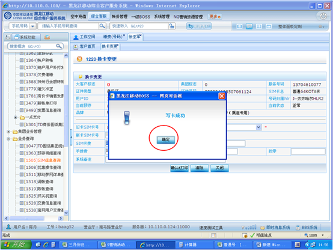

1、进入方式
在“请输入手机号码查询”处输入客户的手机号码，点击查询按钮，点击综合客服-普通变更-换卡变更，或在“快速转入”处输入代码1220换卡变更，点击“回车”确定。
2、界面形式及操作步骤说明
实体卡换卡
（1）在“请输入手机号码查询”处输入客户的手机号码，点击查询按钮，点击综合客服-普通变更-换卡变更，或在“快速转入”处输入代码1220换卡变更，点击“回车”确定。
（2）点击“输入”，由客户通过密码小键盘输入服务密码。
（3）点击“查询”。
（4）在“新卡SIM卡号”处输入新SIM卡号，点击“验证”。
（5）在“SIM卡费”处输入换卡费用。
（6）点击“确认&打印”。
（7）系统自动弹出操作提示对话框，须提示客户“请您将原SIM卡中的信息（电话簿及短信）自行备份，原信息无法自动转移到新SIM卡中”后，点击“关闭”。
（8）根据客户本次是否办理多个业务，点击“打印”或“合并打印”或“打印存储”。
（9）点击“确认”提交本次操作。
空卡换卡
（1）在“请输入手机号码查询”处输入客户的手机号码，点击查询按钮，点击综合客服-普通变更-换卡变更，或在“快速转入”处输入代码1220换卡变更，点击“查询”。
（2）点击“输入”，由客户通过密码小键盘输入服务密码。
（3）点击“确认”。
（4）点击“空卡”。
（5）弹出生成SIM卡号码对话框，把空卡放入写卡器中，点击“随机抽取”，系统自助生成“SIM卡号码”后，点击“确认”。
（6）新卡SIM卡号将自动显示，点击“写卡”。
（7）显示“SIM卡写卡”对话框，点击“写卡”。
（8）点击“确定”，关闭弹出窗口。
（9）显示“请确认写卡数据”，点击“写卡”。
（10）显示“写卡成功”及相关信息，点击“关闭”。
（11）显示“写卡成功，开始修改卡状态”，点击“确定”。
（12）点击“确定”，关闭弹出窗口。

（13）显示“写卡成功”，点击“确定”。

（14）在“SIM卡费”处输入换卡费用。
（15）点击“确认&打印”，系统弹出操作提示对话框，提示客户“请您将原SIM卡中的信息（电话簿及短信）自行备份，原信息无法自动转移到新SIM卡中”后，点击“关闭”。
（16）根据客户本次是否办理多个业务，点击“打印”或“合并打印”或“打印存储”。
（17）点击“确定”提交本次操作。